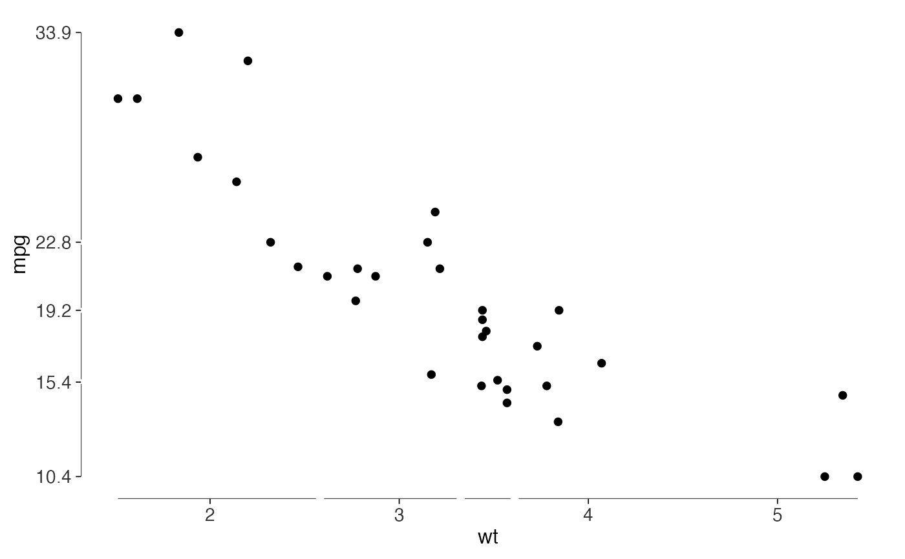

Returns a breaks function that labels the minimum, the quartiles, the median
and the maximum, so that the printed axis labels agree with what a
geom_quartileframe() shows. Tufte's point is that an axis
should report the distribution rather than a set of round numbers picked
by the plotting software.
Arguments
- x
Optional numeric vector. If supplied, the breaks are computed from it once, which is what you want when the axis limits are wider than the data. If omitted, breaks are computed from the scale's own limits.
- digits
Number of significant digits to round the breaks to. Defaults to 3.
- min_gap
Minimum spacing between breaks, as a fraction of the data range; breaks closer than this to the one before them are dropped. Defaults to
0, which keeps the whole five-number summary. Any value you set is a judgement about your own font and figure size, so it belongs in your code rather than in a default here.
Details
All five values are returned by default, because the five-number summary is
what a quartile frame reports. Where two of them fall close enough together
that their labels overprint, min_gap will drop the crowded ones, but
it's off unless you ask for it: the spacing at which labels collide depends
on the font, the figure size and the number of digits, none of which a breaks
function can see. check_labels_fit() measures the collision
properly, at the size you intend to print.
Examples
library(ggplot2)
ggplot(mtcars, aes(wt, mpg)) +
geom_point() +
geom_quartileframe() +
scale_y_continuous(breaks = quartile_breaks(mtcars$mpg)) +
theme_tufte()
